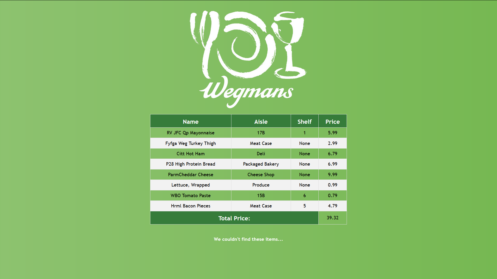

In February of 2020, I participated in the annual hackathon at RIT, Brickhack 6! This event was a ton of fun and I am proud of what my team and I were able to throw together in 24 straight-ish hours.
My team and I, choosing to take advantage of the Wegmans sponsorship of the event, decided to create a recipe helper application that, when given a URL for a webpage with a recipe, returns the Wegmans products which are ingredients. This application uses BeautifulSoup4 to scrape the website for the recipe information, Google's Natural Language API (with some modifications) to decide which words are ingredients and which are irrelevant, the Wegmans API to query for products, and Flask to build a simple web framework.
This was an incredibly fun experience that definitely taught some valuable life lessons. The first is that attempting to catch a couple of hours of sleep during an all-nighter only makes it worse. The more important lesson relates to the objective of a hackathon. We came in thinking that the goal is to put together a working product in 24 hours. This is interesting from a technical perspective, but somewhat limiting conceptually. The projects that drew the most interest (and were most valuable in reality) were small proofs-of-concept for quite complex products. These teams pitched solutions to relevant real-world problems, with immense potential value. Our team focused on the question, "How do we do it?", rather than the more important question, "Why should we do it?" From this experience, the importance of every aspect of a company, not just engineering, was impressed upon me.